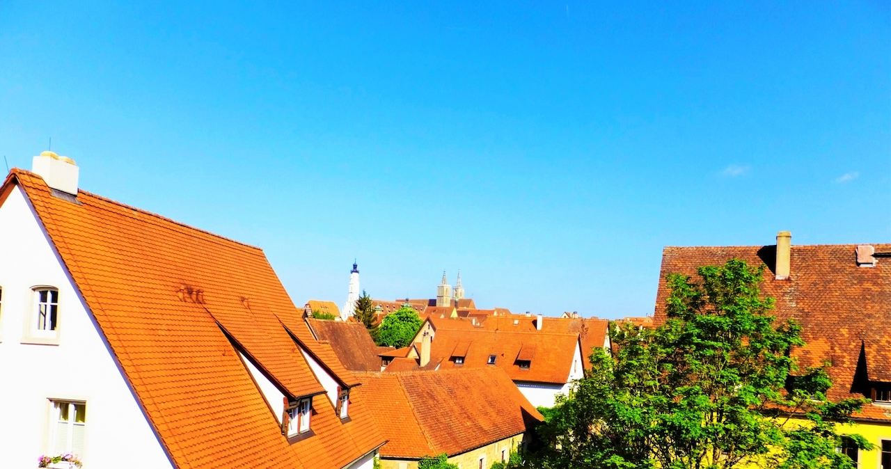

演じるにあたって
２．主要キャラクターのイメージはサイトTOPよりご覧いただけます。
３．()は漢字の読み方、または、キャラクターセリフ中の動作を表現します。
４．ーーXXX は状況や動作を表現するト書きです。
５．ーーーーー はシーン転換や間を開けることを意味します。
元魔王 旅人 年齢：数千歳
魔王の娘 年齢：１１
貴族兵の恋人。約束の場所になかなか訪れない貴族兵を待っている。物語の進行のための役。
元上流市民の老婆 イーラの祖母 年齢：６３歳
魔族 呪術師 魔王城の執務間 数百歳（人間年齢２５歳前後）
演劇団の座長 元魔物 年齢：数百歳（人間年齢２０歳前後）
町の貴族兵。脱走した魔族奴隷クリシュオラを捕まえて暴力をふるう。物語の進行のための役。 年齢：二十歳前後
インプ族の小男。人魔戦争敗戦後の抗争に参加し、街の奴隷となる。逃げ出したが捕まり、殺されかけたところをヴェルに助けられる。 年齢：二十歳前後

ーー早朝、インプ族のクリシュオラが旅立つ。
クリシュオラ：助けていただいて、ありがとうございました。
エリス：いいえ、とんでもございません。困った時はお互い様ですから。お気になさらないでくださいね。
クリシュオラ：ちゃんと挨拶もできずすみません、とお二人に伝えてください。・・・今は逃亡者の身ですから。
エリス：はい、わかりました。
ヴェル：クリシュオラよ。
クリシュオラ：・・・朝早く出ること、バレてましたか。
ヴェル：当然だ。
エリス：うふふ、ヴェル様はなんでも知っておられますねえ。
ヴェル：・・・年の功だ。して、クリシュオラよ、達者でな。
クリシュオラ：・・・いつか、家族と合流できたら、お二人のことを家族にも話します。こんな優しい人族がいたと！
エリス：まあ。。。では、お願いしますね。
ヴェル：うむ。
クリシュオラ：では、ありがとうございました。あまり話していると見つかってしまうので、失礼します。お世話になりました！
エリス：・・・さて、コーヒーでも淹れましょうかね。
ヴェル：ふむ。では、馳走になることとする。
ーーーーー
ーーしばらくしてからイーラ眠そうな顔をして起きてくる。
イーラ：むにゃむにゃ、おはよー。
エリス：おはよう、イーラや。
イーラ：あれぇ、ヴェルと魔族のおじさんはどうしたの？
エリス：クリシュオラ様は朝早くに帰りましたよ。
イーラ：そっか、お話聞きたかったなぁ。
エリス：うふふ、また今度、そのうち遊びに来てくれますよ。
イーラ：そっかあ。ヴェルはー？
エリス：市場に買い物をしにいきましたよ。コーヒーのお返しだとか。
イーラ：帰ってくる？
エリス：えぇ、そのうち。そしたら、ご飯にしましょうか。
イーラ：そっか、よかった。
エリス：色々お話は聞けましたか？
イーラ：うん・・・。寝ちゃったけど。
エリス：あら、ずいぶんと安心できたみたいね。
イーラ：うん。なんだか、ヴェルは不思議。どこか寂しそうなんだけど、すごく強くて、優しくて、うーん。でも私は好きでー・・・
エリス：そう。
イーラ：うん！私ね、ヴェルのこと好き。
エリス：それはよかったですね。さ、あなたは朝の水浴びでもしてきたらいかがですか？
イーラ：えー、水冷たいからきらーい。
エリス：さ、ほらほら。目を覚ましてきなさい。
イーラ：うー・・・。
エリス：ほらほら。はい、良い子ね。じゃあ、ここ閉めますよ。
ーーちょうど買い物からヴェルが戻ってくる。
ヴェル：今戻った。
エリス：あら、ご苦労様でした。
ヴェル：この程度のこと。所望の食材だ。(エリスに渡す)
エリス：(受け取る)ありがとうございます。老婆ゆえ、買い物に行くのも最近は大変になってきましたので、助かります。
ヴェル：・・・イーラは起きたのだな。
エリス：今水浴びをしております。ヴェル様はそちらにかけて、くつろいでください。今ご飯の支度をしますね。
ヴェル：ふむ。今入ったばかりか？
エリス：そうですね。
ヴェル：エリスは眠くはないのか。
エリス：慣れてますから。
ヴェル：そうか・・・達者だな。・・・ふむ。では、私は少し外の掃除をしてこよう。
エリス：あら、どうされましたか。
ヴェル：気にするな。昨日、規律違反だとイーラに叱られたものでな。
エリス：・・・。そうですか。わかりました。
ヴェル：では、少ししたら戻る。
ーーヴェルが出るとほぼ同時にイーラが水浴びから帰ってくる。
イーラ：うー！さむいさむいさむいー！
エリス：あら。
イーラ：うー・・・あれ？ばあば、ヴェルは？今いなかったー？
エリス：ちょうど掃除をしに、外へ出られましたよ。
イーラ：そっか。
エリス：それより、イーラや。
イーラ：ん？
エリス：お風呂場で服を着なさいと、いつも言ってるでしょう。
イーラ：あ・・・てへへ。
ーーーーー
ーー朝ご飯を食べた後、イーラがヴェルに話しかける。
イーラ：ごちそーさまー！
エリス：はい、お粗末様でした。
ヴェル：エリスは料理も達者なのだな。
エリス：そんなことありませんよ。
ヴェル：馳走になった。
エリス：はい。お粗末様です。
イーラ：ねえ、ねえ！ヴェル！今日もお話して。魔族のお話！ヴェルの知ってること！
ヴェル：ふむ。・・・では、今度はヴォルカスの従者達の話をしよう。
イーラ：え〜、また「ヴォルカスの話」じゃないの？
ヴェル：ふむ。その者のことも知っておるが、なんとなく、気恥ずかしいのだ。
イーラ：ふーん。じゃあ〜、いつかは話してくれる？
ヴェル：約束しよう。
イーラ：にへへー。じゃあヴォルカスのお友達の話でいいよ。
ヴェル：お友達か。変わった表現をする。
イーラ：そうかな？うーん。仲がいい人はみんな友達だよ？
ヴェル：・・・ふむ。わかった。今度から友人と、そう呼ぶこととしよう。
イーラ：わかればよろしい。ヴェルはいい子ね。
ヴェル：ふむ。
イーラ：じゃあ〜聞かせて、ヴォルカスのお友達のお話。
ヴェル：わかった。・・・魔王ヴォルカスには二人の友人がおった。一人は共に戦場へ出向く弟のような者。一人は城でのことを良く取り仕切る姉のような者。それぞれオレンドとサラという。二人とも達者な魔術師であった。オレンドは何にでも化ける傀儡師、サラは死人兵も作れる呪術師であった。
イーラ：死人兵って何？
ヴェル：ふむ。イーラは目にしたことがないか。魔術によって死人を戦わせる術がある。命なき戦う者達のことだ。
イーラ：へえー。見てみたい！
ヴェル：ほう。では、いつか見かけたら居所を教えることとしよう。
イーラ：にへへ、待ってるね。
ヴェル：うむ。・・・これはその二人の友人のうちのオレンドという者の話だ。少々過激になるがよいか。
イーラ：また戦争の話？
ヴェル：まぁ、そうだ。(ちょっと肩を竦めて)思い返せば、いつの時代にも戦しかしておらぬものでな。
イーラ：へえーそうなの？・・・うん。いいよ！大丈夫。
ヴェル：では、オレンドは、つくづく戦うことが好きであった。
ーーーーー
ーー海の向こうに見える人族の戦艦を眺める魔物の軍隊。先頭にはヴォルカス、オレンドがいる。そこにサラが訪れる。
ーーーーー
オレンド：おいおい、ヴォルカス様よ。海の向こうに見えるあれは何だあい。わっつ！？あーんなにでっかな魔導戦艦が５隻も見えるなぁ。
ヴェル：此度の襲撃も長くなりそうだな。
オレンド：ブルーだなああ。あー、こんな日の俺はまっさおさおだなぁ！
サラ：まっかっかの間違いでしょ？オレンド。出撃する傀儡は３隻でよかったですか？
オレンド：おぉ！ぐっどもーにんぐサラあ！今日の君は昨日より一段と輝いてるねえ！
サラ：それはどうも。あなたは昨日から何も変わってないわね。
オレンド：はっはっは！いつでもマックスな男だからねえ。そりゃそうさあ！
ヴェル：してオレンドよ、今日はどの程度屠れるだろうか。
オレンド：はっはっは！血の気の多いヴォルカス様だなあ！
サラ：全く男どもはこれだからいやよ。戦の目的は殺しではないでしょう。・・・それで、今回は敵軍の老師はおりますか。
ヴェル：いや、ギルディの気配はない。
オレンド：ならあ！さっさと暴れ倒しちゃおうぜえ！オレンドうーずうずしてきちゃうう。
ヴェル：ふむ。サラよ。我が軍の状況はどうだ。
サラ：敵の巨大戦艦に苦戦しているようです。我が軍の艦が一隻落ちました。
ヴェル：ふむ。では行くかオレンドよ。
オレンド：おおよ！
サラ：では、城の雑事はこちらで片付けておきますね。
ヴェル：サラよ。留守を頼む。
サラ：お気をつけて。
ーーーーー
ーーオレンドが３隻の戦艦に取り憑き海を行く。
オレンド：へいへーい、オレンド戦艦モードだぜえ。ほうほー。乗り心地はどうですかねえ、魔王様。
ヴェル：至極快適である。
オレンド：はっはっはあ！戦艦冥利に尽きるという！もちべーしょんがぐーんっとあがっちゃうねえ！！・・・さてさて？騒ぐかねぇ！
オレンド：(外に向かって)魔族の仲間のみなさーん！オレンドが来ましたよー！かむかーむ！しょぼくれた戦はおしまいだー！ド派手にやろーぜー！あー！忘れちゃならああん！傷ついて戦えないものは乗り込むべし！きっちり安全さあ！っはっはっはー！
ーーオレンドは大砲を発射し始める。強力な傀儡による大砲は人の手による充填の速度の3倍は早い。
オレンド：オレンド戦艦砲撃開始だぜええ！ほら、ほら、ほら、ほら。あっはははっはっは！おぉ！打ち返してくるなんてえ。人間様も気合が入ってるなぁああ！ぐっどぐっどお！ほら、ほら、ほらほらほらほらほらほらほら！！
ーーーーー
ーー暴れるオレンドにちょっと引くイーラ
ーーーーー
イーラ：えー。オレンドは戦争が好きだったの？
ヴェル：戦うことが好きな男であったが、戦争はわからぬ。だが、とにかくオレンドは主張の強い男であった。己の術を試すことが楽しかったのかもしれん。
イーラ：ふーん。そのオレンドは今も生きているの？
ヴェル：ふむ。わからん。オレンドは魔王死去の前に魔王の城から逃げ出した。
イーラ：そうなの？どうして？
ヴェル：わからん。ただ・・・。
イーラ：・・ただ？
ヴェル：ヴォルカスの何かを守ろうとしたと私は考えている。
イーラ：ふーん。オレンドは暴れん坊の悪い人だったんじゃないの？どうしてそう思うの？
ヴェル：暴れん坊であった。が、情に熱い男であった。
ーーーーー
ーーサラの執務室にオレンドがやかましく入ってくる。サラは仕事に集中している。
ーーーーー
オレンド：サラー！ここにいたのかあ！みーっけ！
サラ：はーい、ってオレンドですか、執務中よ。
オレンド：ちょっとだけ！ちょっとだけ！
サラ：だめ。執務中だから。
オレンド：ちょおおっとだけえー！ちょっとだけだからー！
サラ：だめ。
オレンド：いいじゃん！
サラ：うざい。
オレンド：うざくない。
サラ：むり。
オレンド：むりじゃない！
サラ：私あんたのこと嫌いだから帰って。
オレンド：はっはっは！俺は大好き！
サラ：・・・はああ・・・5分だけなら。
オレンド：おっしゃー！さんきゅーなあ！
サラ：で、要件はなんですか？
オレンド：っはっはっはー！何ってわかってるんだろー！水臭いなあ！
サラ：ふん、結婚のことですか？
オレンド：そーそー！サラあ、おめでとうなー！おめでとー！！
サラ：ありがとう。で、要件はおわり？
オレンド：いやいやいや！冷たくない！？もっと俺に親切にしてくれよー！ふれんどだろー！ふれんどー！
サラ：冷たくないわよ。執務中だから。
オレンド：はっはっはー！いやー！サラとはさ、もうずいぶん長いなぁと思ってな。他の幹部とも勿論なんだけど、なんか、サラがいっちばん、一緒にいる気がするんだよなあー！
サラ：そう。
オレンド：でな！そんな親しいフレンドの結婚なのに、世の中は戦争、戦争！なーんか俺としてはこう言う時くらい、はっぴーなムードになってもいいのになぁって！
サラ：そういう時代じゃありませんから。
オレンド：まぁまぁ！俺だってそんなことわかってますよー！それでなあ！俺なりにたっぷり考えて、サラにプレゼントしようと思ってな！
サラ：ありがとう。気持ちだけ受け取っておくわ。
オレンド：おおよ！じゃあプレゼントはここで俺が代わりに開けてあげよう。
ーーサラは筆を置いて、オレンドを見る
サラ：・・・はあ、もう！！で何なのよ。どうせ、昨夜から急いで何か用意したんでしょ。あなた、昨日も戦地だったじゃない。この時間にここにいることの方がおかしいわ。
オレンド：あら、バレた。いやいや！ここまでくるのは大変だったぜ！いっそいで来たんだから！・・・でな、これが俺の・・・ぷれぜんとさああああ！
ーーーーー
ーーイーラがヴェルに聞く
イーラ：ねえ、オレンドのプレゼントは何だったの？
ヴェル：ふむ。小さな傀儡でできた人形模型だった。魔王城に、ヴォルカス、ロクシー、オレンドが楽しそうに踊っている。中心には手に赤子を抱いたサラとその旦那が幸せそうな表情で置かれていたそうだ。
イーラ：わあー。素敵ね。
ーーーーー
ーー思わぬオレンドのプレゼントにサラは感動する
サラ：あ、あなたね・・・
オレンド：最近サラがなーにか抱えてると思ってな。元気なさそうじゃん。少しでもよお！元気に！はっぴーにいられる方がいいなぁ！って思ってねえ！
サラ：あのね・・・こんなものね、今もらってもね、嬉しくなんか・・・(ちょっと泣き始めて)
オレンド：おやあ？
サラ：嬉しくなんか・・・嬉しくなんか・・・うわあああ！ありがとおおお！
オレンド：はっはっはー！喜んでくれて何より何より、一生懸命作ったんだからなぁ！
サラ：(泣きながら)私だって、私だって、こんな戦争ばっかり。幸せに暮らしたいのに、うわああああああ
オレンド：あ、、お、、、サラ・・・。
サラ：なあんであんたなんかに泣かされなきゃならないのよおお！（机に突っ伏すように泣く）
オレンド：お、おいおい。
ーーーーー
ーー少しの間泣いた後。サラとオレンドは穏やかな雰囲気で話す。
サラ：グス・・・
オレンド：落ち着いたかい？
サラ：グス・・・恥ずかしいところを見せたわね。
オレンド：ん？ははは、かまわないさあ。
サラ：・・・はあ、戦争終わらないかなぁ。
オレンド：・・・そろそろ終わるさ。
サラ：・・・根拠は？
オレンド：んー、なんとなく。でも俺の勘ってよく当たるのよ。
サラ：くだらない。
オレンド：おーいおーい！そんなこと言うなよ！今日だってサラが結婚したことを勘で当ててるんだからな！
サラ：嘘。ヴォルカス様に聞いたでしょ。
オレンド：ありゃ？サラは何でもお見通しだなぁ！はっはっは！
サラ：当たり前でしょ。この城は誰の呪術で覆われてると思ってるの。
オレンド：確かになあ！・・・でな！俺もう1個考えてきたのよ！
サラ：・・・何よ。今度はもっとくだらないやつ？
オレンド：ふっふっふー！さ、サラの仕事は今日は終わりー！俺、サラの仕事を傀儡を通して見て、覚えたんだー！だから、今日だけ！今日だけ代わりに仕事してやるから、帰ってゆっくりしたらいいさー！休むの大事！
ーーオレンドがサラの荷物をもって、サラを立ち上がらせて、執務室のドアの方に押す。
サラ：ちょ、ちょっと！
オレンド：いいからいいから
サラ：でも、私だけ帰るなんて、ねえちょっと！
オレンド：どんうぉーりどんうぉーりー！心配しない、心配しない。
サラ：わ、わかった、帰る、帰るわよ。
オレンド：うっし！なーら、あとは俺がやっておこー！
サラ：・・・じゃ、じゃあよろしくね、あ、、、ありがと。
オレンド：おーよ！元気、取り戻せよー！
ーーーーー
ーーイーラがちょっと見直したように
イーラ：へー！オレンドはちゃんと仕事もできたのね！
ヴェル：・・・そ、そうだ。
イーラ：ん？あれ？・・・違うの？
ヴェル：そうだ。
イーラ：ん？わかんない。どっちー？
ヴェル：オレンドはその後執務に取り掛かったが、わからなくて飽きてしまい。30秒で投げ出してヴォルカスの元へ飛んでいったそうだ。
イーラ：・・・へー・・・
ヴェル：そして後日、サラにこってりと怒られたそうだ。
イーラ：クス、オレンドって変な人なのね。
ヴェル：全くだ。
イーラ：会ったことがないからわかんないけど、きっと面白い人なんだろうなぁー。お話きいてみたいなぁー。
ヴェル：ふむ。そうだな。愉快な男だ。
イーラ：ねえ、オレンドは城から逃げ出した後、どうなったの？死んじゃったの？
ヴェル：わからぬが、おそらく生きておる。
イーラ：ほんと！？会えるかな！？
ヴェル：ふむ。・・・近いうちに会わせてやろう。
イーラ：やったー！約束ね。
ーーーーー
ーー一通り話した後、ヴェルは立ち上がってエリスの家を出ると言う
ーーーーー
ヴェル：さて、私はそろそろいくとする。こんな時間まで世話になった。
エリス：ヴェル様やこの後はどちらへ向かわれるのですか？
ヴェル：目的地は決めておらぬが、しばしこの街を見てまわろうと思っている。
エリス：そうですか。
イーラ：ねえ、ばあば、ヴェルは家に泊まったらだめなの？
エリス：そうさねえ。ヴェル様や、もしお宿がなければ、街にいらっしゃる間うちにおられても。
ヴェル：ありがとう。心遣いは非常に嬉しいが、あまり清い身ではないゆえ、気持ちだけ頂戴する。
エリス：そうですか。相変わらず、大袈裟な方さね。
イーラ：ねえヴェル！またお話しにきてくれる！？
ヴェル：約束しよう。
イーラ：やったー！
エリス：イーラや、よかったわね。
イーラ：うん！
ヴェル：では、私はこれで。イーラも、また。
イーラ：うーん・・・はーい！ヴェル！絶対遊びに来てね！
ヴェル：うむ。約束しよう。・・・では、失礼する。
ヴェル：(Ｍ)彼らに背を向け歩く私の背中にイーラがひとりしきり声をかけてくる。
イーラ：ばいばーい！またお話聞かせてねー！絶対だよー！約束だからねー！
ーーーーー
ーーお昼過ぎにエリスと別れ、また街の様子を眺めて回るヴェル
ヴェル：(Ｍ)二人の家を出た後、街の中心の方へ歩みを進める。ふむ。昨日の記念祭の喧騒も収まっているか。宴の後の文字通りの「休み」だな。
ーー昨日と比べて全く静かな街を歩くヴェル
ヴェル：(Ｍ)ロクシーよ。旅に出ると不思議なこともあるものだ・・・。君と良く似た家族を見かけた・・・。または、君を求めるあまりに私の心が見せたまやかしか。ただ、あの家で厄介になっている時間は、なんとも君と一緒にいた時のような、懐かしさを感じた。ロクシー、君も最後くらいは家族の元へ帰りたかっただろうに。
ーーぼんやりと歩いていると段々と日が暮れてきた。ふと一人の街娘が膝を抱えて座っている。
ヴェル：ふむ。気づけば、もう夕刻か・・・ん？
街娘：はあぁー。
ヴェル：どうされたのだ、婦人よ。
街娘：ふぁ！？な、何！？
ヴェル：すまぬ。突然声をかけてしまって。
街娘：な、あなた、誰ですか？
ヴェル：ヴェルという。旅人だ。歩いていたら、婦人が憂いているのが気になってな。
街娘：あ、あなたには関係ないことよ。。。
ヴェル：そうだ。関係ない。して、話してみよ。
街娘：え？・・・なんか、怪しい人じゃ、ないよね？
ヴェル：難しいな。自分でもなぜ声をかけたのか、不思議に思っている。
街娘：へー・・・あはは・・・。ふー。まいっか。どうせ暇だし。私ね、恋人を待っているんだけど。
ヴェル： (Ｍ)聞けば、貴族兵の恋人を待っており、恋人が死んだと報告した「脱走魔族奴隷」が、街から森へ向かうのを見かけた者がいると。それを聞いた主人が怒って、捕まえてこいとその恋人に命じたらしい。今日はその者の誕生日で、彼女は祝うためにここで昼からずっと待っているという。
街娘：はー・・・。いつ終わるんだろう。
ヴェル：似たような話を、聞いたばかりだったな。
街娘：へ？
ヴェル：独り言だ。・・・ふむ。この私が、その件は預かろう。そこで待っていると良い。
街娘：へ！？ちょ、ちょっと！！
ーー歩いてエリスの街に向かう途中
ヴェル：ちょうど心遣いを断ったその日に、再度伺うことになるとは。なんとも・・・
イーラ：(前セリフを遮って)やめてーー！ばあばに手を出さないで！！
ヴェル：これは・・・イーラか。なるほど。急がねばならぬ。
ーーーーー
ーーエリスの家の前
貴族兵：おいおい、ちょっと胸ぐら掴んだくらいで取り乱すなよ、ちびっこ。
イーラ：やめて！！ばあばにひどいことしないで！！
貴族兵：っち、わかったわかった。離すから騒ぐな。(エリスの胸ぐらを話す)
エリス：はあはあ
イーラ：ばあば！
エリス：大丈夫さね。
貴族兵：で、ばあさん、魔族がどこにいったか教えてくれませんかね・・・。
エリス：本当に、私は知りません。確かに、うちで一晩休まれましたが。。。
貴族兵：いやいや、信じられないだろ。死にかけだったんだよ、昨晩は。それが1日休んだだけでころっと起きれるはずないわけよ。
エリス：本当です。立派な旦那様が魔族をおぶっていらっしゃって、あっという間に治療されたんです。
貴族兵：嘘をつくな！ありえないんだよ！薬じゃそんなことはできない。・・・例えばの話だが、魔法なんか使ったらなぁ、この辺りの魔素検知器が反応して警報が鳴りひびくはずだ！昨晩は、なってないんだ。わかる・・・（サイレンが鳴り響く）な、なんだ！？
ーーその時町中の魔素検知器がけたたましいサイレンを鳴らし始める
イーラ：ひゃ！
貴族兵：な、何事だ！どうなってやがる！
エリス：・・・
貴族兵：(エリス達に)お、おい、お前ら、緊急事態だ。奴隷のことは後だ。今は家の中にはいっておけ。多分この近くが発信源だ。
エリス：・・・いいえ、大丈夫でございます。
貴族兵：・・・ん？意地はってないで早く家にはいっておけ。
エリス：・・・いいえ。
貴族兵：ん？なんだ、何か知ってるのか？
エリス：えぇ。私は半魔でございます。
イーラ：え！？
エリス：つい、感情の高ぶりを抑えきれず魔素を放ってしまいましたが、サイレンの音で心が落ち着きました。じきにサイレンもやむでしょう。
貴族兵：・・・ほう？半魔とな？
エリス：すみませんでした。
貴族兵：・・・で、あんた、半魔の登録は？
エリス：していませんでした。
貴族兵：そうか。では、無断居住の罪で刑にかけさせてもらうが。よいのか？あんた・・・ここに昔から住んでんだろ？
エリス：かまいません。
イーラ：ばあば！
エリス：大丈夫さね。イーラ。刑を受けたらすぐに戻って来れるからね。
貴族兵：・・・そうか。挨拶くらいは見逃してやる。
ーーそういって貴族兵は背中を向ける
エリス：イーラ。ご飯の作り方はわかるかい？
イーラ：まって！ばあば！今のは・・・！
エリス：しっ、だめよ。イーラ。あなたが捕まってしまったら、悲しむ人がたっくさんいるの。
イーラ：なんで！でも！だからってばあばが！
エリス：私はもう十分に生きてきたさね。イーラとも、イーラのママとも十分に。
イーラ：なんでよ、なんでよ・・・。あっ！ほら！今は大丈夫！ほら！ね！
エリス：お願いだから、聞き分けて頂戴。
貴族兵：おーい、そろそろいいかー。俺、脱走奴隷も見つけなくちゃいけないから、あんたに聞きたいこといっぱいあんのよ。
ヴェル：すまぬ。一足遅れた。
ーーヴェルが空から、兵士の後ろに降りてくる(エリス、イーラ同時)
エリス：ヴェル様！
イーラ：ヴェル！
貴族兵：ん？
ヴェル：ふむ。守り人よ。私の友人が世話になった。
貴族兵：うおぉぉ！あんた誰だよ！
ヴェル：ふむ。ヴェルという。事態は急がねばならぬ。・・・さて。一つ、エリスよ。
エリス：は・・・はい？
ヴェル：そなたは半魔ではない。
エリス：・・・はい？
ヴェル：一つ、守り人よ。
貴族兵：な、なんだよ！
ヴェル：そなたの恋人が帰りを待っておったぞ。
貴族兵：・・・は？
ヴェル：そして、もう一つ、イーラよ。
イーラ：ふぇ！？
ヴェル：空をみるのだ。
イーラ：そ・・・そら？
貴族兵：あん？。。。な、なんじゃありゃ。。。
エリス：暗雲(くらくも)に・・・龍・・・？
イーラ：なに、あれ？
ヴェル：魔王の気は、当てられた魔の者の姿を大きく変える力がある。
イーラ：わ・・・私が・・・？
ヴェル：そうだ。空に飛ぶ１匹の魔鳥さえ、あのような龍へ変えることができる。・・・イーラは、溜めすぎたのだ。
イーラ：え？え？
ヴェル：私は、イーラの素質に気づかなった。
貴族兵：ま。。。まて、あいつ街に！
ヴェル：主人を救おうとしておるのだろう。
貴族兵：どういうことだ・・・お、おいおいおいおい、ま、街が。。。街が！！！。。。(後ろの後輩に向かって)お前たち！外にいる者を全て、屋内に待避させろ！急げ！
ヴェル：待て！この街の守人よ。
貴族兵：な、なんだよ！
ヴェル：私が預かろう。（飛び上がる）
貴族兵：お！おい！人一人に勝てる相手じゃね・・・・えぇぇえ！？
ーーそしてヴェルは空へとび、龍の首へ手をかけた
ヴェル：すまない。そなたもこの姿になりたくて、なったわけではなかろうに。今戻してやる。そなたの主人は私が預かろう。安心すると良い。
ーーみるみるうちに龍は小さくなり、元の鳥に戻って飛んでいく。
ーー唖然する兵士たち。エリスは確信したような、イーラは目をキラキラさせていた。
貴族兵：龍が・・・
エリス：小さくなっていきますね・・・
イーラ：ヴェルすごーい！
貴族兵：お・・・おい、どうなってんだこりゃ。。。
ーーーーー
ーーしばらくして降りてきて、こちらへ歩いてくるヴェル。
イーラ：ヴェル！(飛びつく)
ヴェル：すまぬ。心配をかけたな。
イーラ：ううん！かっこよかった！
ヴェル：カッコ良かった・・か。して、守り人よ。
貴族兵：はいい！
ヴェル：・・・かしこまらなくてよい。奴隷を探しているんだったな？
貴族兵：そ、そうですが・・！
ヴェル：奴隷は返せぬが、これで其方の主人を納得させることはできるか？
貴族兵：龍・・・うろこ・・・！？
ヴェル：そうだ。１枚だけ拝借した。ふん。(うろこを投げ渡す)
貴族兵：うおっとっと。ほ、本物だ。。。
ヴェル：いくらかは、知らぬが。高価だと聞く。受け取るとよい。
貴族兵：あ、、、ありがとうございます！
ヴェル：それと、恋人が待っておる。急ぐことだ。
貴族兵：は、はいー！ありがとうございました！
ヴェル：うむ。・・・さて。イーラよ、そろそろ降りてはくれぬか。
イーラ：ヴェルってすごいのね！今の何ー！なんで！？龍はなんだったの？龍がちっちゃくなったのは何なの？
エリス：これこれ、イーラや。ヴェル様が困っているさね。・・・ヴェル様・・・。
ヴェル：・・・ふむ。。。ご苦労であった。
エリス：・・・えぇ。全く。とりあえず、家に入りましょうか。ヴェル様もどうぞ。
ヴェル：うむ。
イーラ：わー！今日も泊まっていくのー？
ヴェル：・・・うむ。
ーーーーー
ヴェル：(Ｍ)その日はイーラに延々と問い詰められた。その度にエリスが止めてくれたが・・・ロクシーもこんな感じだったのだろうか。。。散々はしゃぎ疲れたイーラが寝た後、くつろいでいる私にエリスがぼんやり声をかけてきた。
エリス：そうですねえ。ロクシーは不思議な子でした。
ヴェル：ふむ。
エリス：あの子はもともと探検が大好きでした。もう12歳になる頃には、家にいることがほとんどありませんでした。たまに帰ってきては、古代文明の何かを持ってきて、自分の部屋に溜め込んでいましたかね。
ヴェル：彼女らしいな。
エリス：20歳をすぎたくらいの頃だと思います。今度は魔大陸にいくと言い出しましてねえ。私はさすがに死ぬかもしれないと、その時は止めましたよ。まだ、戦の最中でしたから。
ヴェル：私でも止めるだろう。
エリス：ふふふ。私は大げんかしまして、ロクシーはカバンだけ持って家を飛び出してしまいました。それから5年ほどたった頃でしたかね。ふと家に帰ってきて、今度は魔王と結婚すると。当時はもう何が何だかわかりませんでした。
ヴェル：素晴らしい女性だ。
エリス：・・・私もそう思います。イーラも誰に似たのやら。
ヴェル：うむ。
エリス：そして、そこからしばらくしてかしら。終戦の直前。見知らぬ男性が訪れましてねえ。赤子だったイーラと一通の手紙を持ってうちを訪れましてね。その時はすごいことを知らされたのに、ただ混乱してましたねえ。
ーーーーー
ーーオレンドがエリスの家のドアをノックする
エリス：はいはい、こんな夜更けにどなた様ですかー。
オレンド：突然すみません。
エリス：い、いえいえ。どういったご用件でしょう？
オレンド：俺には時間がない。乱暴ですみませんが、これから言うことを信じてください。
エリス：は、はい。
オレンド：あなたの娘さんは俺が殺しました。それと、この娘はあなたの孫です。本当は二人とも守りたかったのですが・・・。本当に、不甲斐ねえです。。。
エリス：い、いえ。は、はあ。あなたは・・・？
オレンド：聞かないでください。それと、これ。あなたの娘さんが書いた手紙です。受け取ってください。
エリス：は、はぁ。
オレンド：それと。これは勘なんですけどね、きっとヴォルカスという男がその子を迎えにきます。その時はどうか・・・ふっ・・・よくしてやってください。
エリス：と言うだけ言って、押し付けるように渡されまして、そのまま挨拶もなしに去っていかれました。
ーーーーー
ヴェル：ふむ。家臣が迷惑をかけた。
エリス：いえいえ。傷があるようには見えませんでしたが、何かものすごく体調が悪そうでした。その男性もきっと大急ぎで駆けつけられたんだと思っております。
ヴェル：ふむ。確かに、そう言う男だ。
エリス：そうでしょうね。ヴェル様はきっとご存知の方なんでしょう。と、私の思い出ばかりだと退屈ですかね。そうさね、２階の右手に元々ロクシーが使っていた部屋があります。あれから１度も開けていませんので、埃が溜まっているかもしれませんが。。。ぜひ見ていってあげてください。
ヴェル：・・・そうか。うむ・・・。
エリス：・・・
ヴェル：・・・
エリス：・・・
ヴェル：・・・感謝する。では、拝見させていただく。
エリス：ふふふ。娘は愛されていたのですね。
ヴェル：・・・そうだ。
ーーーーー
ーーヴェルは恐る恐るロクシーの部屋を訪れる
ヴェル：ふむ。埃の匂いしかせんな。くだらぬ期待かもしれんが、少々の匂いなどを感じられると思ったが、全くないではないか。。。十年というのは、それほどにも長いのか・・・。万を数える時を生きてきた私が、なぜたった十年を、たかだか十年ばかりをここまで長いと感じるのだ・・・。ふむ。
ーーヴェルはロクシーのコレクションの一つを手に取る。
ヴェル：これがロクシーの・・・君の、宝物。か。ふむ、ガラクタだらけではないか。どれもこれも確かに古代の物だが、価値はいかほどもない・・。ロクシー、君はこの程度の目利きしかできんのか。まったく・・・まったく！。。。ロクシー。。。ロクシー！！
ーーヴェルはすすり泣きながら叫ぶ
ヴェル：なぜ私は、これだけの力がありながら。これだけの知恵がありながら、君を守れなかったのだ！いつだって、、、なぜ私は、、、守るとは、力とは、なんなのだ・・・。私のこのような知恵など！この部屋にある君の宝物にも及ばぬグズである！なぜこんなにも私は惨めなのだ！なぜ！！
ーーイーラが気づいて起きてくる
イーラ：んー・・・あれ・・・ヴェル
ヴェル：イーラか。。。
イーラ：・・？・・・泣いてるの？
ヴェル：ふむ。。。起こしてしまったか。すまぬ。
イーラ：(目を擦って)んーん。大丈夫。ヴェル、どうしたの？
ヴェル：昔を、思い出したのだ。
イーラ：そうなの。負けたの？
ヴェル：そうでは、いや、そうだ。
イーラ：ふーん。大丈夫よ。ヴェルは強いから。(そっと膝をつくべるの頭を抱く)
ヴェル：・・・そんなことはない。
イーラ：大丈夫。次は勝てるよ。
0：イーラに抱かれて段々と大泣きしはじめるヴェル
ヴェル：・・・イーラよ、何度も間違えてきたこの私に、また次など、あるのだろうか。
イーラ：うん、あるよ。
ヴェル：・・・そうか。
イーラ：うん。誰にだって、いつもあるんだよ。
ヴェル：そ、うか・・・すまない、すまない、イーラよ。。。すまない・・・そなたの大切な人を・・・私は守れなかった！！
イーラ：大切な人？
ヴェル：そなたの・・・
イーラ：ばあばは今日助けてもらったよ。どうしたの？・・・。
ヴェル：そうか・・・母の記憶もないのか・・・！すまない・・・！
イーラ：ううん、大丈夫よ。
ヴェル：すまない・・・！！
イーラ：いいよ。
ヴェル：ああ、あ、あああ、なぜだなぜだなぜだおお！！おおおおおぉおおぉおおお！！！(イーラに縋り付いて泣きじゃくる)
イーラ：・・・ヴェル、好きよ。
ーーーーー
ーー少し時は流れて、旅団の大型魔導移送車の一室にいるヴェルとイーラ
ーーーーー
ヴェル：(М)その日、私はイーラに抱かれて泣き続けた。なんとも、恥ずかしいことだ。翌日、エリスの家を発った私はオレンドの旅団と旅路を共にすることとした。
イーラ：わあー！すごーい！動いてるよ！ねえ！
ヴェル：そうだな。
イーラ：これが車っていうの！？
ヴェル：そうだ。
イーラ：うん！わーあ！ねぇねぇ、あれ何？
ヴェル：街から出るのも初めて出会ったか。あれは・・・葡萄畑だ。
イーラ：へえー！あれは葡萄なのね！ねえ、あれは！？
ヴェル：ふむ。あれも葡萄畑だ。
イーラ：えー！でも緑だよ！一緒なの！？
ヴェル：色が違うものもある。
イーラ：へえー、葡萄でも違うものがあるんだ・・・。じゃあ、あれは？あ、あれも！あれ！あっちは本で読んだことが・・・
ヴェル：ゆっくり教える。焦るらずともよい。
イーラ：あ、てへへ・・・。
ヴェル：ふむ。
ーーそこにオレンドの足音が聞こえる
オレンド：ふんふんふーん。さてさて〜？俺のふれええんどはどこのお部屋を借りてるのかな？
ヴェル：騒がしいのがきたか・・・。
オレンド：お？およよよ？おんやあゔぇるう！・・・とちびっこいの！
イーラ：ち、ちびっこいの！？
オレンド：こーんなにちっちゃな女の子連れて！まさかあ！そう言う趣味なのおお！？
ヴェル：・・・
オレンド：っはっはっは！！そう怒るなって！！うそうそ、なんか事情があるんだよねえ！
イーラ：ね、ねえ、ヴェル、この人は誰なの？(怪しんでいる)
オレンド：おぉ、レディ。私はこの演劇旅団の役者さぁ！あくたー！あくたー！まぁ脚本もやっていてー、そしてー、実は座長ですよー！リーダーなんです！お嬢ちゃん。
イーラ：へ、へぇ。(気圧される)
ヴェル：やめろ、怯えておるだろう。
オレンド：はっはっは！すまんすーまーん！そーりーそーりー。俺の名前は、オレンド。オレンドさ。
イーラ：へえ〜、オレンド、ね。
ーーーーー
ただ君だけを、守りたいと願う〜出立〜